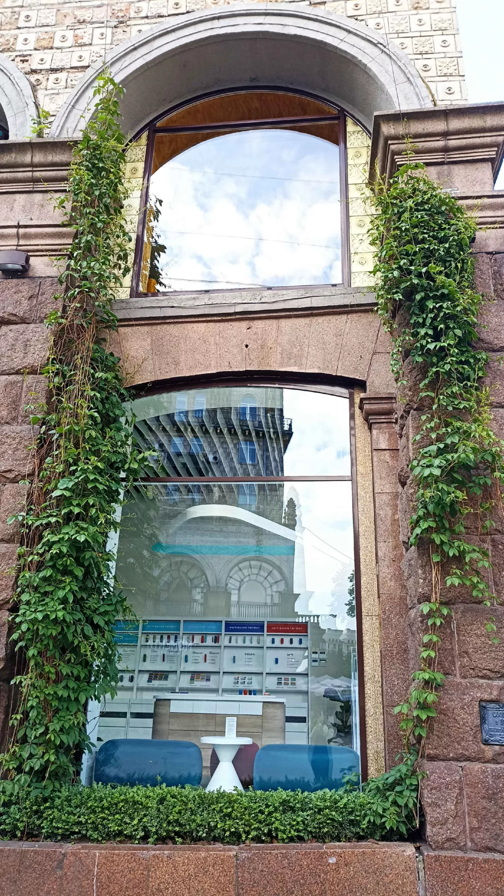
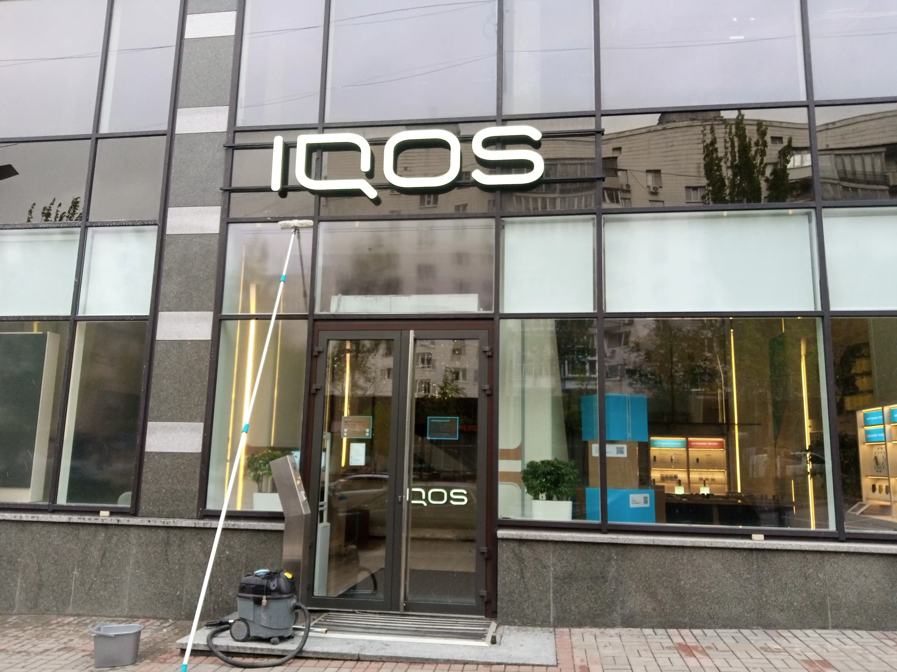
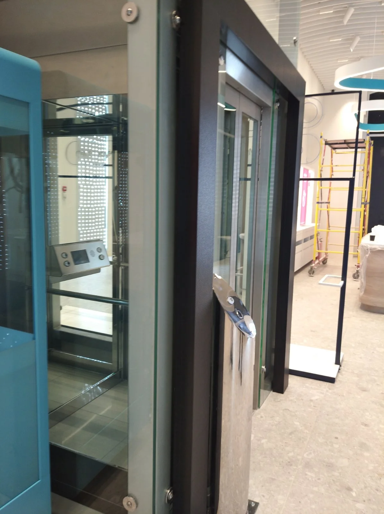

У великих містах, таких як Київ, вікна щодня стикаються з пилом доріг, слідами вихлопних газів, дощами з частинками сажі та будівельним пилом. Згодом скло втрачає прозорість, стає каламутним, а приміщення візуально темнішим і менш затишним. Але саме через вікна в будинок приходить світло, тепло і відчуття простору.
Уявіть: наші фахівці приходять із сучасним обладнанням, включають парогенератор, і кожен міліметр скла починає буквально дихати чистотою. Ми знімаємо шар за шаром міський наліт, акуратно очищаємо рами, ущільнювачі та укоси, а після - поліруємо поверхню до дзеркального блиску. Ні розлучень, ні слідів — лише кристальна прозорість та відчуття свіжого ранку, ніби вікно - це портал в інший, чистіший світ.
Етапи миття вікон у Києві:
— Попередня оцінка стану скла та рам.
— Нанесення професійного розчину, що очищає (безпечного для людей і тварин).
— Механічна та парова очищення важкодоступних зон.
- Полірування мікрофіброю з антистатичним ефектом.
- Перевірка під різними кутами світла для ідеального результату.
Такий підхід не тільки повертає вікнам їх прозорість, але й продовжує термін служби рам і ущільнювачів. А ваш будинок чи офіс наповнюється більше світла, затишку і навіть натхнення — адже погодьтеся, чисте вікно немовби відкриває нові горизонти.

В умовах мегаполісу вікна піддаються впливу багатьох забруднювачів: пил, вихлопні гази, сажа, дощові краплі з домішками хімічних речовин. З часом скла втрачають свою прозорість, а приміщення стають темнішими і менш затишними. Генеральне миття вікон — це комплексна послуга, спрямована на відновлення ідеального стану віконних конструкцій та покращення мікроклімату у вашому будинку чи офісі.
Фахівці використовують лише професійні та безпечні засоби, які ефективно видаляють забруднення, не ушкоджуючи поверхні. Ми застосовуємо сучасне обладнання та технології, щоб забезпечити бездоганний результат.
Переваги генерального миття вікон:
Чому обирають нас: ми гарантуємо високу якість виконання робіт, використання безпечних та ефективних засобів, а також індивідуальний підхід до кожного клієнта. Наша мета – забезпечити вам ідеальну чистоту вікон та комфорт у вашому будинку чи офісі.
Замовте генеральне миття вікон прямо зараз — і відчуйте, як ваш інтер'єр наповнюється свіжістю та гармонією!
Написати до Viber
Зателефонувати зараз 0986381008

Після завершення будівельних або ремонтних робіт вікна часто покриті шарами пилу, фарби, штукатурки, клею та інших забруднень. Після-будівельне миття вікон — це спеціалізована послуга, спрямована на відновлення прозорості скла та повернення приміщенню свіжості та затишку.
Наші фахівці використовують лише професійні та безпечні засоби, які ефективно видаляють будівельні забруднення, не ушкоджуючи поверхні. Ми застосовуємо сучасне обладнання та технології, щоб забезпечити бездоганний результат.
Переваги після-будівельного миття вікон:
Чому обирають нас: ми гарантуємо високу якість виконання робіт, використання безпечних та ефективних засобів, а також індивідуальний підхід до кожного клієнта. Наша мета – забезпечити вам ідеальну чистоту вікон та комфорт у вашому будинку чи офісі.
Замовте після-будівельне миття вікон у Києві прямо зараз — і відчуйте, як ваш інтер'єр наповнюється свіжістю та гармонією!
Написати до Viber
Зателефонувати зараз 0986381008
Кожне вікно, кожна поверхня — це турбота про ваш комфорт та затишок. Наша команда працює так, щоб Ви відчували легкість, порядок і гармонію вже в перші години після прибирання. Multi-Cleaning – це не просто сервіс, це досвід чистоти, який надихає та радує щодня.
📞 098 638 10 08 |
098 638 10 08
💬 Звязатися через Viber і отримати консультацію та швидкий розрахунок ціни прямо зараз!
Замовте прибирання прямо зараз — і Ваші вікна засяють чистотою, а будинок наповниться свіжістю та гармонією!
Ціна залежить від типу вікна, поверховості та ступеня забруднення; наші тарифи актуальні і нижчі за ринкові — для точного розрахунку використовуйте калькулятор або дзвоніть.
Так, в більшості випадків ми виконуємо замовлення в день звернення або на наступний день - уточнюйте доступність бригад у менеджера.
Ми застосовуємо парове очищення та спеціальні склади для безпечного видалення будівельного пилу та слідів фарби без пошкодження скла.
Замовте миття вікон — ціни актуальні і нижчі від ринкових
Залежно від площі, ступеня забруднення та складності (висота, вид скла) середні розцінки у Києві варіюються. Нижче орієнтири, актуальні на 2025 рік - ваша заявка буде розрахована з урахуванням усіх нюансів.
| Тип вікна / послуга | Ціна (грн/м² або за вікно) | Примітки |
|---|---|---|
| Генеральне миття стандартного вікна | від 85 грн/м² | типове скління |
| Базове миття загального фасаду (сезонне) / віконної стіни | від 55 грн/м² | при великому обсязі, зручний доступ |
| Мийка після ремонту – стандартні вікна (двостороння) | ≈ 220 грн/м² | сильні забруднення, видалення нальоту |
| Мийка після ремонту – одностороння | ≈ 130 грн/м² | внутрішня сторона при обмеженні доступу |
| Мийка панорамних / вітражних вікон | за домовленістю | індивідуальний розрахунок залежить від форми та висоти |
| Мінімальне замовлення (об'єкти з дрібною площею) | роздрібні/часткові замовлення |
Нижче за ринок — але з гарантією якості. Замовте розрахунок у вікні: Написати до Viber або Зателефонувати: 098 638 10 08